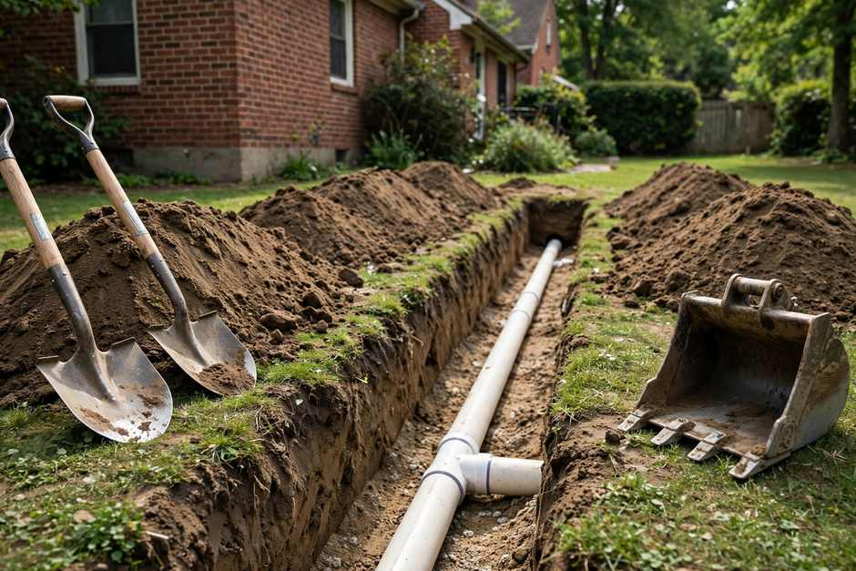
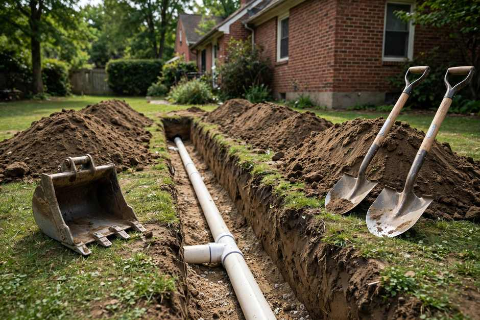
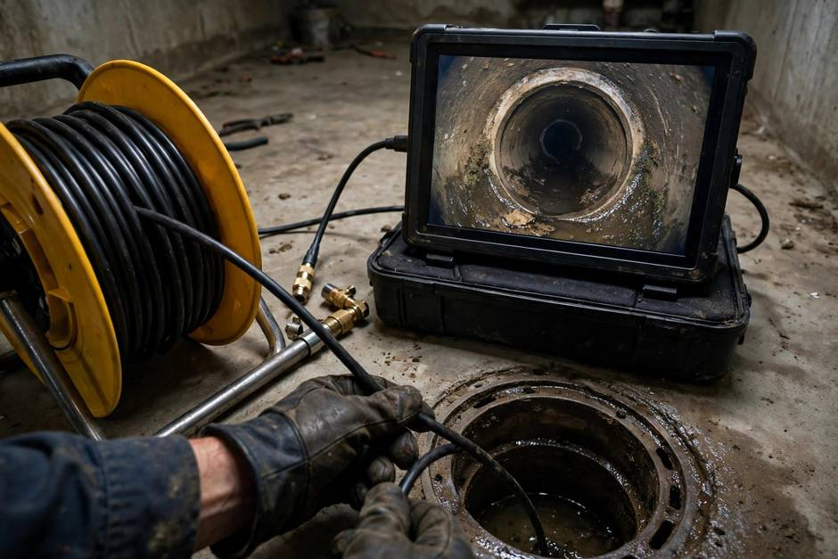
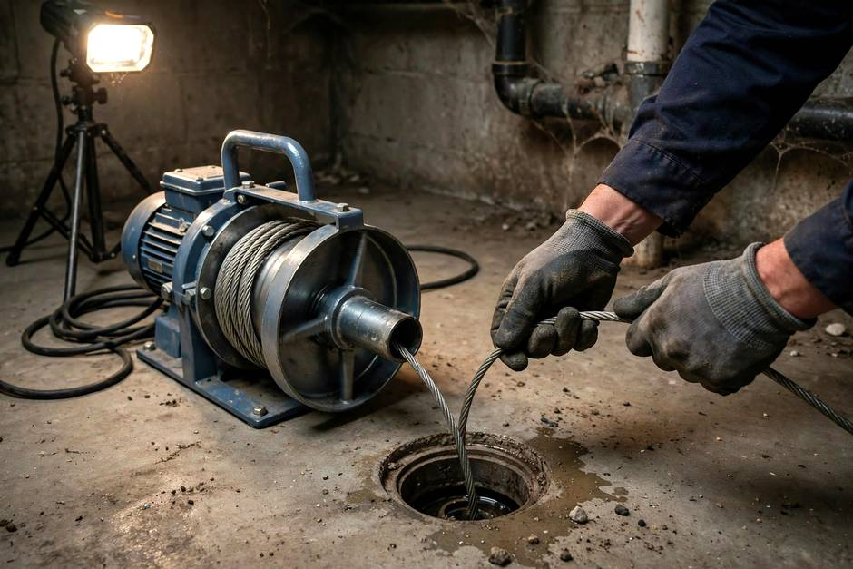

Sewer Backup Help in Belleville, Illinois
Sewer Backup Belleville IL: Signs, First Steps, and Causes
A sewer backup in Belleville, IL can send wastewater into sinks, tubs, toilets, and floor drains, and the signs often appear in more than one fixture at the same time. This page explains what to check, what to avoid, and what may cause the backup, so a call can focus on the right work for the home.
Call (618) 677-6556Monday through Friday, 8:00 AM to 4:30 PM. Closed Saturday and Sunday.Google rating 5.0 from 3 reviews
What This Page Covers
Understanding a Sewer Backup in Belleville
A backup is the event, not the repair. The sections below separate signs, first steps, and causes from the repair work that may follow, including when a camera inspection of the sewer line can help locate the cause.
Signs Across Fixtures
Gurgling sounds, slow draining, water rising in a tub or shower when a toilet flushes, and sewage odors can point to a backup in a main line. Signs in several fixtures together carry more weight than a single slow drain.
First Steps at Home
Limit water use, avoid flushing and running appliances that drain, and keep people and pets away from wastewater. Note which fixtures are affected and when the signs started, so the visit can start with clear information about the pattern.
Causes in Older Lines
In older Belleville homes, expect to check clay laterals with joints that can admit roots, cast iron drains with buildup, and settled or damaged sections. Age alone does not prove the cause, and a line check separates possible causes.
Heavy Rain and City Sewers
Belleville has a City-owned mixed sewer system, with a combined-sewer historic core and separate systems elsewhere. The City states that heavy rain brings basement backups, so a backup after rain may involve the public system as well as the lateral.
Lateral Ownership in Belleville
The owner owns the lateral from the building to the main, including under streets (City code §50.023). That ownership line matters during a backup, because the location of a blockage or break affects who handles part of the work.
When Repair Follows a Backup
Clearing a blockage and repairing a line are different steps. A backup visit focuses on the event and its cause, while repair or replacement work follows only after the line condition and the location of the fault are understood.
About Hinkle Plumbing Company
A Belleville Plumbing Company for Sewer Backup Calls
Hinkle Plumbing Company is based in Belleville, IL, at 1610 W Main St, Belleville, IL 62220. Calls about sewer backup Belleville IL can focus on signs, affected fixtures, and the next step for the home.
A sewer backup call often begins with a description of what changed in the home: which fixtures are affected, whether the signs followed heavy rain, and whether wastewater has appeared at a low drain. That information helps shape the visit, including what to check in the lateral and whether a camera check of the line would help. Hinkle Plumbing Company serves Belleville from its W Main St base, and readers can call (618) 677-6556 during stated hours to discuss a backup and the work that may follow.

How we workPhotograph of a plumber checking a floor drain in a Belleville home basement.
What Happens During a Visit
Steps for a Sewer Backup Visit in Belleville
The steps flex with the condition of the job, but the sequence stays the same.
Describe the Signs
The visit starts with the pattern: which fixtures are affected, what sounds or odors appeared, and whether signs followed rain. Clear notes about the pattern help narrow the check to the drains and lateral sections involved.
Check Low Fixtures and Drains
Lower fixtures and floor drains are checked for standing water, residue, and signs of flow from the line. The check looks for a pattern across fixtures, which can point to a main line issue rather than a single fixture blockage.
Locate the Cause in the Line
The line is checked to separate a blockage from damage, root entry, or a settled section. The location of the fault matters, because the lateral runs from the building to the main and different sections call for different work.
Discuss Findings and Options
Findings are discussed in plain terms, including what was found, where it was found, and what work may follow. Scope factors are covered before work begins, so the reader can consider the path that fits the condition found.
Plan Follow-Up Work
If repair or replacement work is needed, the follow-up is planned around the line condition, access, and the location of the fault. The backup event and the repair decision stay separate, so each step is considered on its own findings.
Checking the Line
Ways to Check a Sewer Backup Cause
Checks vary with the signs and the line. Some checks clear a blockage, while others look inside the line to find the cause, and drain cleaning may be one part of the work when a blockage is present.
Fixture and Drain Check
Fixtures and drains are checked for the pattern of the backup, including which fixtures back up together and where water appears. The pattern helps decide whether the issue sits in one branch or in the main line serving the home.
Main Line Clearing
Clearing work addresses a blockage in the line, using methods suited to the material and condition found. Clearing alone does not repair damage, so the line condition is still checked after flow is restored to the drains.
Camera Check of the Line
A camera check looks inside the line for roots, breaks, offsets, and settled sections, and records where each finding sits. That location record matters for planning repair work and for checking the position relative to the property line.
Root Entry Checks
Roots can enter through joints in clay laterals, and older lines call for a check of joint condition. Expect to check for root growth where trees stand near the lateral, and to separate root blockage from pipe damage.
Rain-Related Backup Checks
After heavy rain, the check considers whether the public system and the lateral both played a part. The City states that heavy rain brings basement backups, so rain timing is noted as part of the pattern.
Backwater Valve Discussion
A backwater valve may be installed where backflow could occur, and the discussion covers whether such a valve fits the home and the line layout. The valve is a preventive topic to discuss, not a finding from the backup event.
Common Patterns
Common Sewer Backup Patterns in Belleville Homes
The patterns below describe calls in general terms, without details from any single home. When damage is found, sewer line repair is discussed as follow-up work after the backup cause is understood.

Several Fixtures Back Up Together
A common call describes water rising in a tub or shower when a toilet flushes, with gurgling at other drains and slow draining across the home. The pattern points to the main line rather than a single fixture, and the check focuses on the lateral and the fixtures involved. The discussion covers what was found in the line, where the fault sits, and what work may follow, with scope factors covered before any repair work begins.
Backup After Heavy Rain
A common call follows heavy rain, with water appearing at a floor drain or a low fixture and signs easing as rain ends. The City states that heavy rain brings basement backups in Belleville, so the check notes rain timing alongside the fixture pattern. The discussion covers the lateral condition, the role of the public system, and whether a preventive topic such as a backwater valve may be worth discussing for the home.
Problems That Can Follow
What a Sewer Backup Can Mean for a Home
Most calls fall into a few patterns. Knowing which pattern applies decides what the visit involves.
Wastewater in Living Spaces
Wastewater reaching sinks, tubs, or floor drains creates a cleanup and sanitation concern for the home. Limiting contact with affected water and limiting further water use helps contain the spread while the cause is checked and discussed.
Backups That Return
A backup that returns after clearing can point to roots, damage, or a settled section that clearing alone does not resolve. A check inside the line helps separate a repeat blockage from a condition that calls for repair work on the lateral.
Damage Hidden in the Lateral
Breaks, offsets, and settled sections can sit out of sight in the lateral, with only the backup pattern to show for them. Expect to check the line condition when signs point past a single fixture, so damage is not mistaken for a simple blockage.
Storm-Related Basement Water
Heavy rain can add water to the system and bring basement backups, especially where the public system and the home lateral meet during a storm. Noting rain timing and the fixtures affected helps separate a storm pattern from a line condition alone.
Cost Factors
What Shapes the Cost of Sewer Backup Work
Cost depends on scope, access, and line condition. Call to discuss.
Clearing and Checking
Clearing and checking work varies with access to the line, the fixtures involved, and whether a camera check is needed to locate the cause. The extent of the blockage and the condition found during the check shape the scope of the visit.
Repair After Diagnosis
Repair scope varies with the location of the fault, the length and depth of the section involved, the pipe material, and access for the work. Restoration of surfaces disturbed by the work is also part of the scope to discuss before work begins.
City Program Check
The City of Belleville Sewer Lateral Repair Program may relate to the portion of the lateral beyond the property line. Readers should check current City program details for terms, and discuss with the City whether the program relates to the work.
Reviews from Google
What Customers Say on Google
★★★★★
“Very prompt and responsive, the worker was friendly and informative! Will use this company again!”
★★★★★
“Don did an outstanding job for me when I needed him and highly recommend his business”
★★★★★
“Rated 5.0 out of 5 across 3 Google reviews, all five stars.”
What should I do when sewage backs up in Belleville, IL?
Limit water use, avoid flushing and running appliances that drain, and keep people and pets away from wastewater. Note which fixtures are affected and whether signs followed rain, then call Hinkle Plumbing Company at (618) 677-6556 during stated hours to discuss the signs and the check that may follow for the home.
What causes a sewer backup in an older Belleville home?
Causes can include roots entering joints in clay laterals, buildup in cast iron drains, settled or damaged sections, and heavy rain affecting the public system. In older homes, expect to check the line condition and the lateral layout, because age alone does not prove the cause and a check separates possible causes.
Do I need a permit for sewer backup work in Belleville?
Permit needs depend on the work planned. The City of Belleville requires a permit before plumbing work begins (§152.05(A)); direct replacement of a toilet, sink, faucet, or other appliance is exempt, except hot water heaters require an electrical or gas permit (§152.05(B)(3)). Discuss the planned work to confirm the permit path.
What affects the cost of sewer backup work?
Cost varies with access to the line, the fixtures involved, whether a camera check is needed, the location and extent of the fault, pipe material, and restoration of disturbed surfaces. No single figure fits every backup, so call Hinkle Plumbing Company at (618) 677-6556 to discuss scope factors for the home.
Related services
Other Plumbing Services We Handle

Sewer Camera Inspection in Belleville, IL
A camera check looks inside the line to locate roots, breaks, and settled sections.
Drain Cleaning in Belleville, IL
Drain work addresses blockages in fixtures and lines, with the cause checked as part of the visit.
Sewer Line Repair in Belleville, IL
Repair work follows diagnosis, with scope shaped by the fault location and line condition.Mon–Fri 8:00 AM–4:30 PM
Call About a Sewer Backup in Belleville, IL
Call Hinkle Plumbing Company at (618) 677-6556 to discuss a sewer backup in Belleville, IL. Hours are Monday through Friday, 8:00 AM to 4:30 PM. Closed Saturday and Sunday. The company is based at 1610 W Main St, Belleville, IL 62220.

Talk with the local team
Request Sewer Backup
Call (618) 677-6556 during office hours, Monday through Friday, 8:00 AM to 4:30 PM. Tell us what is happening and we will talk through the next step.